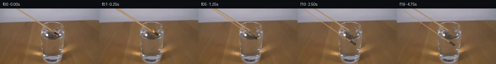

![首帧]()

Round 00
2026-11-05T02:58:20.148738+00:00像素候选变化代码 +258/−0inspection 更新
pixels bc1d308cffb3f613 · code 9f4647094d581d27
查看本轮 generate.py 真实 diff
--- previous/generate.py
+++ current/generate.py
@@ -0,0 +1,258 @@
+#!/usr/bin/env python3
+"""Generate a 20-frame, pixel-authored match-extinguishing animation.
+
+Only the supplied first_frame.png is used. Frame zero is passed through
+unchanged; subsequent frames use a locally inpainted clean plate and analytic
+antialiased shapes for the moving match, flame, water ripple, and bubbles.
+"""
+
+from pathlib import Path
+import math
+
+import cv2
+import numpy as np
+from PIL import Image, ImageDraw, ImageFilter
+
+from artifact_io import save
+
+
+ROOT = Path(__file__).resolve().parent
+W, H = 256, 144
+S = 4 # supersampling factor for all newly drawn detail
+
+
+def clean_plate(src: np.ndarray) -> np.ndarray:
+ """Remove the original match using a tightly restricted inpaint mask."""
+ mask = np.zeros((H, W), np.uint8)
+ # Original wooden shaft. The mask is deliberately narrow so the plate's
+ # lighting and the glass geometry remain source pixels.
+ cv2.line(mask, (42, -7), (142, 62), 5, 255, cv2.LINE_AA)
+ # Burning head and its compact source flame.
+ cv2.ellipse(mask, (145, 64), (10, 6), 34, 0, 360, 255, -1, cv2.LINE_AA)
+ cv2.ellipse(mask, (140, 58), (7, 7), 20, 0, 360, 255, -1, cv2.LINE_AA)
+ # Close pinholes, but do not let the edit spread around the rim.
+ kernel = np.ones((3, 3), np.uint8)
+ mask = cv2.morphologyEx(mask, cv2.MORPH_CLOSE, kernel)
+ plate = cv2.inpaint(src, mask, 4, cv2.INPAINT_TELEA)
+
+ # Feather only the inpaint boundary back into the untouched source.
+ alpha = cv2.GaussianBlur(mask, (0, 0), 0.75).astype(np.float32) / 255.0
+ alpha = alpha[..., None]
+ return np.clip(src * (1.0 - alpha) + plate * alpha, 0, 255).astype(np.uint8)
+
+
+def rgba_layer() -> Image.Image:
+ return Image.new("RGBA", (W * S, H * S), (0, 0, 0, 0))
+
+
+def P(point):
+ return tuple(int(round(v * S)) for v in point)
+
+
+def polygon(draw, points, **kwargs):
+ draw.polygon([P(p) for p in points], **kwargs)
+
+
+def composite(base: np.ndarray, layer: Image.Image) -> np.ndarray:
+ small = layer.resize((W, H), Image.Resampling.LANCZOS)
+ return np.asarray(Image.alpha_composite(Image.fromarray(base).convert("RGBA"), small).convert("RGB"))
+
+
+def capsule(draw: ImageDraw.ImageDraw, a, b, radius, fill):
+ """Draw an oriented filled capsule at supersampled resolution."""
+ ax, ay = a
+ bx, by = b
+ dx, dy = bx - ax, by - ay
+ length = max(math.hypot(dx, dy), 1e-6)
+ nx, ny = -dy / length * radius, dx / length * radius
+ polygon(draw, [(ax + nx, ay + ny), (bx + nx, by + ny),
+ (bx - nx, by - ny), (ax - nx, ay - ny)], fill=fill)
+ r = radius * S
+ for x, y in (a, b):
+ cx, cy = x * S, y * S
+ draw.ellipse((int(cx-r), int(cy-r), int(cx+r), int(cy+r)), fill=fill)
+
+
+def motion_offset(t: int):
+ """Ease the match down by 27 px and very slightly toward glass center."""
+ if t <= 0:
+ return 0.0, 0.0
+ u = min(t / 12.0, 1.0)
+ eased = u * u * (3.0 - 2.0 * u)
+ dy = 27.0 * eased
+ return -0.075 * dy, dy
+
+
+def draw_ripple(frame: np.ndarray, t: int) -> np.ndarray:
+ if not (4 <= t <= 14):
… diff truncated; 171 more lines …